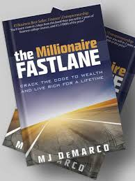

The Millionaire Fastlane: Crack the Code to Wealth and Live Rich for a Lifetime
Book by M. J. DeMarco
"The brick walls are there for a reason. The brick walls are not there to keep us out; the brick walls are there to give us a chance to show how badly we want something. The brick walls are there to stop the people who don’t want it badly enough. They are there to stop the other people!"
Note: change your oil so your car doesn't "broke" down…. hehe, get it? I made that myself by the way. This is from Chapter 27.
I really like this chapter (considering the fact I didn’t remember it after reading it once) as it emphasizes the need for a voracious learning lifestyle.
Headlines from the Book:
- I don’t know how: If you need to go somewhere, just go. The “how” becomes obvious. M. J. mentions how you learn by engaging, doing, and taking action towards those goals important to you.
- Education is freely available: I saw a video where Will Smith (Men in Black, Fresh Prince of Bel-Air) said there’s a book for whatever you need to do. I can take this further and say that this means there's a book for anything you want to be.